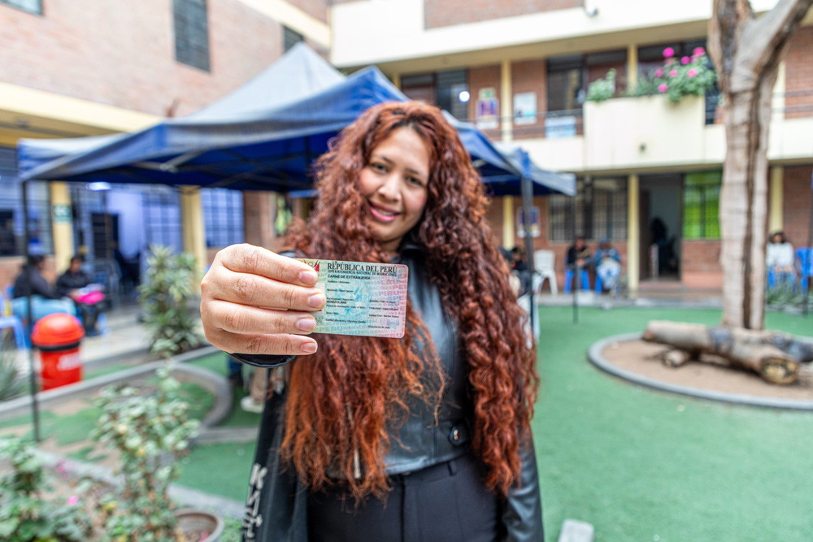
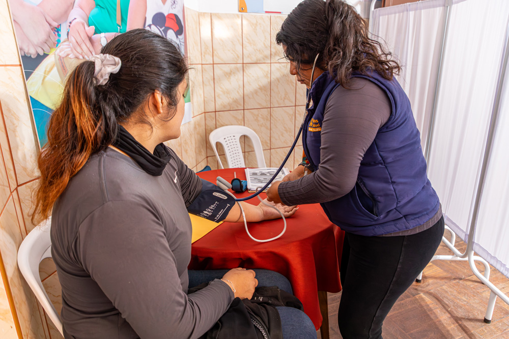

Sobre la plataforma
Esta plataforma es un espacio virtual confiable y siempre actualizado donde podrás encontrar, en un solo lugar,información sobre los servicios disponibles para personas que tuvieron que salir de su país y llegaron al Perú.
Aquí podrás ubicar fácilmente dónde recibir atención, apoyo o asesoría, y conectar con las organizaciones que trabajan cada día para brindarte protección y asistencia.